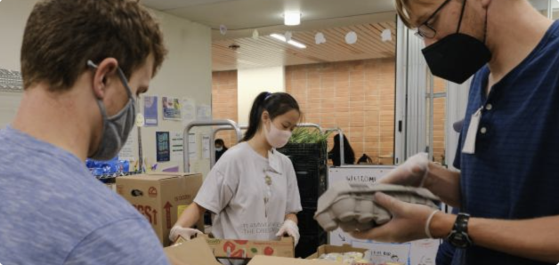

Check our out Walk-in menu to view our fresh and non-perishable items and quickly pre-order your items so we can pack your items in advanced for you to pick up!
We pack your non-perishables on the spot! This includes items such as canned goods, toiletries and more. No same day appointments.
Walk-In: We offer fresh produce, dairy, and nonperishable items! We restock every Monday, Wednesday, and Friday. Check our menu to see what goodies we have in stock!